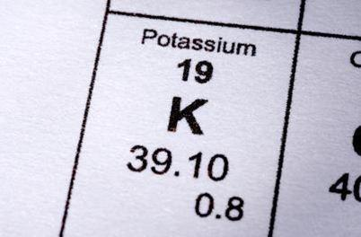
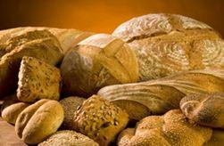
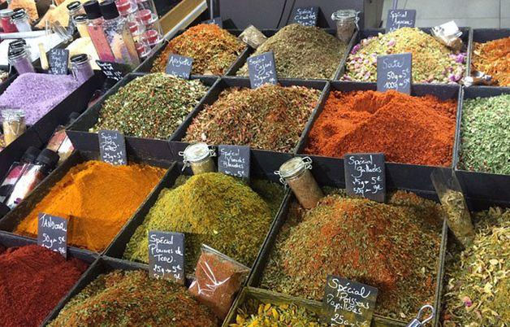

Le temps passe en ayant respecté plus ou moins les bonnes résolutions de la Saint Sylvestre. Je vais donc finir mon triptyque sur les macronutriments en vous parlant du Potassium. Même s'il ne représente que 0,4 % de notre poids corporel. Il est presque invisible car il se cache pour 98 % à l'intérieur de nos cellules et surtout dans nos muscles pour 75 %. Pour une personne adulte nos besoins sont de 4 g par jour et minimisé à 3 g chez les seniors. Une Kaliémie normale se situe entre 3,5 et 4,5 mmol/L.
Même s'il peut vous paraître insignifiant, ce macronutriment maintient l'équilibre hydrique de notre corps. Il est gage de stabilité de notre tension artérielle et a une incidence sur la transmission de l'influx nerveux dans nos activités sollicitant notre structure musculaire.
Symptômes carentiels de potassium
Les symptômes carentiels de cet élément sont la faiblesse musculaire, paralysie, distension de l’estomac, manque d’énergie dans l’intestin et dans la vésicule biliaire avec constipation, douleurs, intensifie la fatigue, quelques manifestations d’insuffisance cardiaque, baisse de tension et irrégularité de l’impulsion (arythmie).
Les vomissements, diarrhées, la prise abusive de laxatifs et diurétiques ce sont des facteurs qui peuvent provoquer un déficit de Potassium.
Ce qui fait qu'en cas de carence on peut retrouver :
Au niveau cardiovasculaire : une hypertension artérielle.
Au niveau ostéo-articulaire : l'arthrose, une ostéopénie ou faible densité osseuse par manque de biosynthèse du tissu osseux.
Au niveau neuro-psychique : une fatigue, une faiblesse musculaire, voire même du stress ou de l'anxiété.
Alors qu'à l'inverse l’excès conduit à des troubles du rythme cardiaque avec arythmie et risque d'arrêt cardiaque.
Ce macronutriment se retrouve surtout dans les condiments et épices comme le cumin, le curry, le poivre noir et le gingembre apportant en moyenne 1350 mg pour 100 g du produit. Mais aussi dans les fruits secs recommandés de prendre pour une petite pause à 16h30/17h comme je le préconise dans ma méthodologie alimentaire « La PsychoMorphoNutrition ».
Les abricots secs qui pour 100 g apportent 1100 mg ou les figues sèches, même plus caloriques donnent 900 mg ou les raisins secs donnant 773 mg de Potassium toujours pour 100 g. Il ne faudrait pas bouder notre gourmandise avec le chocolat noir qui est riche de 727 mg de Potassium. Mais moins riches seront les fruits frais comme la banane avec 411 mg apportés ou les légumes comme les artichauts cuits encore que 411 mg ou les épinards avec 390 mg de Potassium pour 100 g.
Mais il faut aussi concevoir que lors de la cuisson, une partie de ces macronutriments peuvent disparaître dans l'eau de cuisson. Alors en ce cas, on pourrait opter pour une cuisine vapeur, ou au grill ou en papillote avec du papier sulfurisé et non d'aluminium, pouvant être un facteur de développement de la maladie d'Alzheimer.
Moralité, on peut s'établir une bonne santé avec une alimentation saine, variée et équilibrée en se faisant plaisir sans que cela se passe avec contrainte et résignation ! Il ne faut jamais subir sa vie mais la vivre avec intensité, ceci nous permet d'exister.
Partager cette page